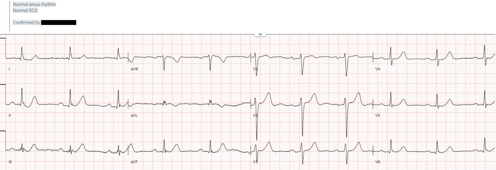
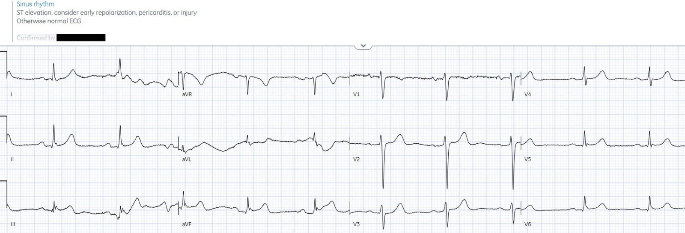
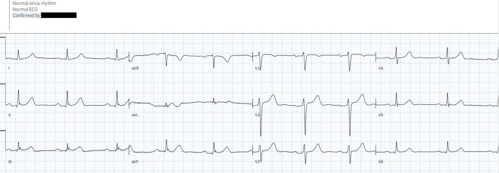
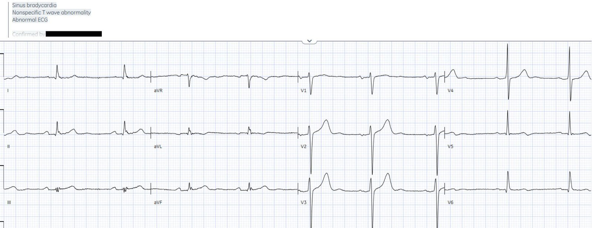
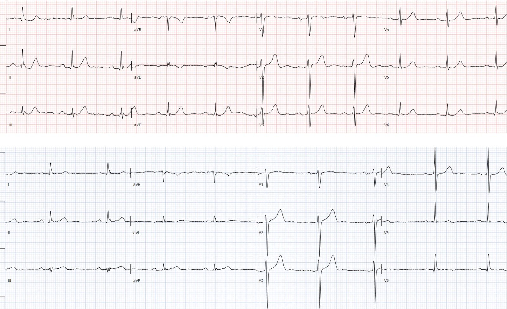
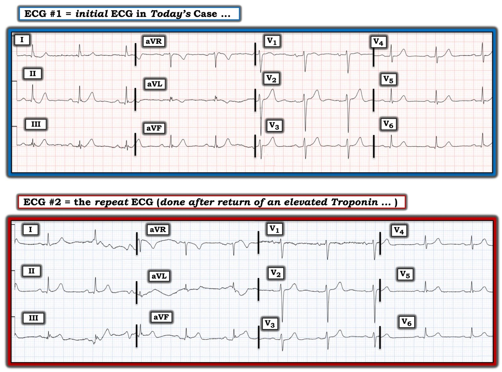

06/12/2022 — Bệnh nhân 65 tuổi ngất với điện tâm đồ ‘bình thường’: cho về nhà?
Bản dịch tiếng Việt của bài "65 year old with syncope and a ‘normal’ ECG: discharge home?" – Dr. Smith’s ECG Blog. Giữ nguyên toàn bộ 7 hình ảnh của bản gốc.
Tác giả: Jesse McLaren
Một bệnh nhân 65 tuổi bị đái tháo đường đến khám vì một
cơn ngất xảy ra khi đang ngồi, kèm yếu sức nhưng không đau ngực hay
khó thở. Các dấu hiệu sinh tồn bình thường và điện tâm đồ đầu tiên được máy tính đọc là
bình thường, rồi được bác sĩ cấp cứu điều trị và bác sĩ tim mạch đọc lại (overread) xác nhận. Bạn nghĩ gì?


(thuật toán Marqette 12SL)
Nhịp xoang bình thường, dẫn truyền bình thường, trục bình thường,
tăng tiến sóng R bình thường và điện thế bình thường, có sóng J do tái cực sớm. Có đoạn ST dạng xuống-lên (down-up) ở các chuyển đạo dưới và sóng T tối cấp, kèm sóng T dạng lên-xuống (up-down) soi gương ở aVL.
Tôi đã gửi điện tâm đồ “bình thường” này, không kèm thông tin gì, cho một số người đam mê điện tâm đồ, và tất cả đều lo ngại khả năng OMI – hoặc OMI bên cao kín đáo với thay đổi soi gương ở các chuyển đạo dưới, hoặc OMI thành dưới kín đáo với thay đổi soi gương ở các chuyển đạo bên cao.
Troponin I lần đầu trả về 2,800 ng/L (bình thường <16 ở
nữ và <26 ở nam), và một điện tâm đồ ghi lại được thực hiện:


Có trôi đường nền làm điện tâm đồ khó
đọc, nhưng không còn ST chênh xuống ở các chuyển đạo dưới và sóng T đã nhỏ hơn. Còn sót lại ST chênh lên tối thiểu do tái cực
sớm.
Vì ngất và troponin tăng, bệnh nhân
được chuyển đến khoa tim mạch với chẩn đoán ngất do tim. Troponin lặp lại giảm còn 2,500 và một điện tâm đồ ghi lại được thực hiện sau
thêm 2 giờ nữa, cũng được đọc là bình thường. Troponin lặp lại giảm còn 2,500, và một điện tâm đồ khác được thực hiện:


(thuật toán Marqette 12SL)
Tương tự lần trước. Các bác sĩ tim mạch lo ngại rằng
điện tâm đồ thứ hai có thể đã cho thấy ST chênh lên kín đáo ở các chuyển đạo dưới, điều có thể liên quan đến tắc RCA
và tắc RCA có thể đã gây blốc tim dẫn đến ngất. Vì vậy họ đưa bệnh nhân đi thông tim khẩn: tắc 100%
nhánh bờ tù phía dưới của động mạch mũ, có tuần hoàn
bàng hệ. Nếu các bác sĩ tim mạch làm theo hướng dẫn cho NSTEMI hoặc STEMI thoáng qua, vốn khuyến cáo thông tim không khẩn, bệnh nhân có thể đã tái phát
OMI và có kết cục xấu hơn.
Nhưng sự nhìn xa trông rộng này sẽ không được ghi nhận, vì bệnh nhân được chẩn đoán là “STEMI thoáng qua”, dù chưa có điện tâm đồ nào từng đạt
tiêu chuẩn STEMI. Thực tế, ST chênh lên duy nhất là ST chênh lên nền do tái cực
sớm, và so với mức nền đó thì bệnh nhân chỉ có ST chênh xuống và
sóng T tối cấp. Vì vậy đây là OMI STEMI âm tính (STEMI(-)OMI) thoáng qua, chứ không phải STEMI thoáng qua.
Điện tâm đồ lúc ra viện có sóng T nhỏ ở các chuyển đạo dưới và sóng T đảo ngược (TWI)
tái tưới máu kín đáo ở V5-6


Dưới đây là so sánh điện tâm đồ ban đầu và điện tâm đồ lúc ra viện:


Điều này xác nhận điện tâm đồ ban đầu có ST chênh xuống ở các chuyển đạo dưới, theo sau là sóng T tối cấp (de Winter), và cả sóng T tối cấp ở các chuyển đạo bên V4-6. Lúc ra viện, sóng de Winter ở các chuyển đạo dưới đã hết và sóng T ở các chuyển đạo bên đã xẹp xuống và đảo ngược.
Điều cần nhớ
1. Ngất là biểu hiện không thường gặp của hội chứng vành cấp (ACS), nhưng các triệu chứng tương đương
đau thắt ngực (anginal equivalents) dễ gặp hơn ở bệnh nhân lớn tuổi bị đái tháo đường
2. Tắc động mạch mũ có thể gây thay đổi điện tâm đồ kín đáo hoặc không gây
thay đổi nào
3. Bạn không thể tin những điện tâm đồ được gắn nhãn “bình thường”
4. Sóng T tối cấp và thay đổi soi gương có thể giúp nhận diện OMI STEMI âm tính (STEMI(-)OMI)
5. Động mạch có thể bị tắc hoàn toàn trong khi dòng chảy vẫn được duy trì từng lúc nhờ tuần hoàn bàng hệ
6. Sóng de Winter có thể xảy ra ở bất kỳ động mạch vành nào: xem ca này và ca này

==================================
Bình luận của KEN GRAUER, MD (6/12/2022):
==================================
Một ca quan trọng được Dr. McLaren đưa ra bàn luận — ở chỗ bệnh nhân hôm nay chắc chắn bị nhồi máu cơ tim nhưng không đau ngực. Thay vào đó — triệu chứng duy nhất là ngất kèm yếu sức.
- Nhồi máu được chẩn đoán trong ca hôm nay dựa trên các dấu hiệu: i) Troponin tăng đáng kể; ii) Tắc 100% nhánh bờ tù phía dưới của động mạch mũ trái (LCx), dù có tuần hoàn bàng hệ; và, iii) Thay đổi điện tâm đồ kín đáo trên các bản ghi liên tiếp, bao gồm cả gợi ý sóng T tái tưới máu.
ĐIỂM THEN CHỐT (PEARL) #1: Không phải mọi bệnh nhân nhồi máu cơ tim cấp đều khai đau ngực. Các nghiên cứu Framingham từ nhiều năm trước đã cho chúng ta biết tỷ lệ “nhồi máu cơ tim thầm lặng” (Silent MI) cao tới ~30% trong tất cả các ca nhồi máu cơ tim (Kannel & Abbott: N Engl J Med 311(18):1144-1147, 1984 — Kannel: Cardiol Clin 4(4):583-591, 1986).
- Điểm thú vị của dữ liệu này là ở khoảng một nửa số 30% này (tức là ~15% tổng số bệnh nhân nhồi máu cơ tim) — những bệnh nhân được phát hiện có bằng chứng nhồi máu rõ ràng trên điện tâm đồ theo dõi hằng năm hoàn toàn KHÔNG có triệu chứng — do đó là những ca nhồi máu cơ tim thực sự “thầm lặng”.
- Ở nửa còn lại của 30% này (tức là ở ~15% tổng số bệnh nhân nhồi máu cơ tim) — những bệnh nhân được phát hiện trên điện tâm đồ theo dõi là đã bị nhồi máu thì không đau ngực — nhưng họ có “một triệu chứng khác” được cho là liên quan đến nhồi máu cơ tim.
- Triệu chứng “khác” thường gặp nhất là khó thở. Các triệu chứng tương đương không phải đau ngực khác gồm — đau bụng — triệu chứng “giống cúm” (tức là đau cơ; cảm thấy không khỏe) — mệt mỏi quá mức — ngất — thay đổi tình trạng tâm thần (tức là như có thể gặp ở một bệnh nhân lớn tuổi đi lang thang khỏi nhà).
- ĐIỀU CỐT LÕI: Hãy lưu ý đến thực thể “nhồi máu cơ tim thầm lặng” — vốn có thể hoặc hoàn toàn “thầm lặng” — hoặc đi kèm một triệu chứng tương đương không phải đau ngực. Cả hai loại nhồi máu cơ tim thầm lặng đều phổ biến hơn so với mức đôi khi được nhận thức. Không phải mọi bệnh nhân nhồi máu cơ tim cấp (hoặc mới xảy ra) đều có đau ngực.
ĐIỂM THEN CHỐT (PEARL) #2: Tiên lượng lâu dài chung sau cơn ngất lần 1 là tốt, đặc biệt ở người trẻ trước đó khỏe mạnh. Tuy vậy — khả năng xảy ra kết cục bất lợi (kể cả tử vong) tồn tại ở mọi nhóm tuổi. Nhóm nguy cơ cao nhất là những bệnh nhân có nguyên nhân tim gây ngất, ở họ tỷ lệ tử vong sau 1 năm có thể lên tới 33% (Koene và cs.: J Arrhythm 33(6):533-544, 2017).
- Ngất do tim được ghi nhận ở ~9% bệnh nhân trong các nghiên cứu Framingham. Tuy vậy — tỷ lệ thực tế bệnh nhân bị ngất do tim trong Framingham rõ ràng cao hơn con số này, vì có tới 1/3 bệnh nhân bị ngất không rõ nguyên nhân. Dữ liệu này làm nổi bật điểm mà Dr. McLaren đã nêu ở trên — rằng thông tim chẩn đoán cho bệnh nhân hôm nay (dù không đạt tiêu chuẩn STEMI) có thể đã cứu sống bệnh nhân!
- Ngất không phải là biểu hiện thường gặp của nhồi máu cơ tim cấp. Tuy vậy — ngất lại thường gặp hơn khi là hậu quả của nhồi máu cơ tim cấp. Các cơ chế có thể gây ngất liên quan đến nhồi máu cơ tim cấp gồm: i) Đáp ứng phản xạ ức chế tim và giãn mạch do kích thích phế vị (gặp nhiều nhất trong nhồi máu cơ tim thành dưới cấp); ii) Xuất hiện blốc AV mức độ cao (cũng thường gặp hơn trong nhồi máu cơ tim thành dưới cấp); và/hoặc, iii) VT bền bỉ (may mắn là ít gặp hơn nhiều trong kỷ nguyên tái tưới máu cấp).
2 điện tâm đồ đầu tiên trong ca hôm nay:
Tôi nghĩ đáng để xem lại lần cuối 2 điện tâm đồ đầu tiên trong ca hôm nay — mà để cho rõ, tôi đã đặt lại ở Hình 1.
- Như Dr. McLaren đã nêu — điện tâm đồ ban đầu trong ca hôm nay đúng là đáng lo ngại: i) Có sóng T tối cấp ở mỗi chuyển đạo dưới — được xác định nhờ “béo hơn” ở đỉnh và rộng hơn ở đáy so với mong đợi (đặc biệt ở chuyển đạo III — nơi sóng T lấn át hẳn QRS của chuyển đạo này); và, ii) Phức bộ QRS nhỏ xíu ở chuyển đạo aVL đi kèm đoạn ST dạng vòm (coving) rõ rệt với sóng T đảo ngược có hình dạng rõ ràng là không bình thường.
- Các dấu hiệu ở chuyển đạo ngực trên điện tâm đồ #1 không đặc hiệu và không có giá trị chẩn đoán.
- Nhận định về điện tâm đồ #1: Dù rõ ràng có thể khó biết phải làm gì với điện tâm đồ ban đầu này khi không có đau ngực — khả năng OMI cấp mới xảy ra hoặc đang diễn ra là nguyên nhân gây ngất ở bệnh nhân lớn tuổi này đã tăng vọt ngay khi troponin lần 1 trả về tăng!
- Tổng hợp lại tất cả: Ngất (là triệu chứng khởi phát) + thay đổi tối cấp trên điện tâm đồ #1 + troponin lần 1 = 2,800 ng/L — lẽ ra đã đủ để cho thấy cần thông tim kịp thời.
Điện tâm đồ #2 được ghi khi troponin lần 1 trả về tăng:
- May mắn là trong ca hôm nay — nhóm tim mạch đã đủ lo ngại về ST chênh lên kín đáo ở các chuyển đạo dưới 2 giờ sau khi ghi điện tâm đồ #2, nên họ đã tiến hành thông tim và nhờ đó có chẩn đoán.
- Ý CỦA TÔI: Điện tâm đồ #2 không cho thấy rõ cần xử trí tiếp như thế nào! Dù đúng là có vẻ như lúc này có một chút ST chênh lên ở các chuyển đạo dưới mà không có trên điện tâm đồ #1 — Dữ liệu vào tệ thì kết quả ra cũng tệ! — Theo tôi, điện tâm đồ #2 không đọc được ở bệnh nhân này, người mà bạn rất lo ngại có thể đang ở giữa một cơn nhồi máu cấp đang tiến triển. Đó là vì có quá nhiều nhiễu ở 5 nhát bóp hiển thị trên các chuyển đạo chi, đến mức tôi không biết đâu là “thật” và đâu là nhiễu. Điện tâm đồ thứ 2 này lẽ ra phải được ghi lại ngay lập tức.

